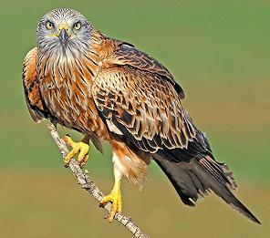
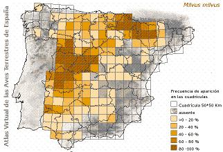

|
| Milano
real |
Milvus
milvus |
| Ave
sedentaria |
Orden:
Falconiformes, familia: Accipitridae |
 Identificación
Identificación |
| Adulto |
Foto |
Rapaz
relativamente grande (60 - 70 cm), de gran envergadura.
Es inconfundible su silueta en vuelo por el marcado
ahorquillamiento de la cola. También es
vuelo son muy conspicuas las manchas blancas que
exhibe bajo las alas, cerca de las base de las
rémiges primarias. Las alas son estrechas
y largas, y las puntas de las rémiges negras. |
 |
El
milano real adulto presenta la cabeza y el cuello
casi blancos, algo grisáceos, y salpicados
con estrías afiladas y oscuras. El dorso
es pardo oscuro, con plumas orladas de amarillo
herrumbroso. Por debajo es rojizo, de tonos aladrillados,
con manchas verticales negras. Ojo amarillento.
Cera y patas amarillas. Por su eclecticismo a
la hora de buscarse el alimento, las garras del
milano real están poco especializadas,
presentando los dedos algo cortos para el tamaño
del ave y no demasiado fuertes. |
| Descripción
del juvenil |
Los
jóvenes presentan la cabeza amarronada.
El resto del cuerpo es de tonalidades más
claras que los adultos. |
|
|
Distribución |
Habita
en la mitad meridional de Europa, turquía
y norte de África. |
 |
Los
que viven y crían en la Península
Ibérica son sedentarios. También
son sedentarios los que crían en la España
insular; concetatmente las isala habitadas por
el milano real son mallorca, Menorca, Gran Canaria,
Tenerife, La Palma, Gomera y Hierro. |
Las
poblaciones mas norteñas de Europa invernan
en la Península Ibérica especialmente
y en África. Cuando han acabado la crianza
de los pollos inician el viaje a sus cuarteles
de invierno, prolongado la afluencia hasta principios
de noviembre. El viaje de retorno hacia sus áreas
de cría lo efectúan desde finales
de febrero hasta abril. |
En
España y el resto de Europa vive la subespecie
típica Milvus milvus milvus. |
| Es
muy filopátrica, lo que supone una dificil
colonización natural de nuevas áreas. |
|
|
| Sierra
de Béjar |
Reproducción
segura. Nidifica con preferencia en bosques de
rebollo hasta una altitud de 1.300 m.
Durante el invierno el número de aves se
incrementa con la llegada de migrantes europeos.
En los Picos de Valdesangil, a 860 y 980 m., se
conocen dos dormideros invernales utilizados desde
hace años. Durante esta época las
aves se mueven habitualmente por el valle del
río Sangusín, zona baja del rio
Cuerpo de Hombre y alrededores de sus dormideros. |
|
|
Habitat |
Habita
todo tipo de zonas arboladas. Prefiere terrenos de mayor
altitud que el milano negro, siendo habitual en muchas
áreas de piedemonte, media montaña y sierras
bajas del interior peninsular. En invierno prefiere
los pastizales, cultivos, otros terrenos abiertos y
las zonas próximas al hombre donde encuentra
fácilmente basura y carroñas para su alimentación. |
|
Biología |
Nidificación
y crianza. Anidan en los mismos territorios
año tras año. Aunque ocasionalmente puede
criar en roquedos, eligen los grandes árboles
para ubicar sus nidos. Muy frecuentemente utilizan los
viejos de otras aves, arreglandolos previamente. Durante
la incubacíon y crianza de los pollos los tapiza
con hierba seca, lana, trapos viejos y otros desperdicios
humanos. |
La
puesta tiene lugar entre primeros de marzo y finales
de abril, y a veces algo más tarde. Consta de
1 a 4 huevos en extremo, pero normalmente se compone
de 2 ó 3. Pone a intervalos de tres días.
Los huebos son blancos con manchas pardo rojizas o aladrilladas,
elipticios y sin brillo. Miden 57,5 X 44,7 mm. |
La
incubación es realizada principlamente por la
hembra, aunque a veces interviene el macho mientras
ella comi, y dura entre 28 y 32 días. Los pollos
nacen cubiertos de un grueso plumón pardo grisáceo,
con una mancha oscura delante del ojo. A los pocos días
es sustituido por otro más denso, oscuro y rojizo.
Al principio la hembra cuida y vigila a los pollos,
mientras el macho se encarga de aportar el alimento
al nido, pero más tarde ambos consortes colaboran
en la caza. A las dos semanas empiezan a salirles las
plumas, y a las cuatro semanas ya están casi
emplumados, quedándoles plumón sólo
en la cabeza. Pero no echan a volar hasta pasadas las
seis semanas de edad. A los dos meses de esad aproximadamente
abandonan el territorio paterno. |
Alimentación.
La
dieta alimenticia del milano real es extremedamente
variada, dependiendo el tipo de alimentación
de la época del año. En la temporada de
otoño e invierno es, como el milano negro, básicamente
carroñero. Frecuenta entonces los basureros de
pueblos y ciudades en busca de desperdicios de todo
tipo, juntándose a veces docenas de individuos
en esos lugares. |
Durante
la primaver y el verano se alimenta de presas vivas
especialmente. Da caza en esa épocas a todo tipo
de invertebrados, anfibios, reptiles, algunos peces,
aves hasta el tamño de una paloma, y pequeños
y medianos mamíferos hasta el tamaño de
un conejo. Emplea dos sistemas de caza. Uno de ellos
consiste en remontarse lentamente en amplios círculos
sobre terrenos abiertos, cultivos y pastizales. Desde
considerable altura escudriña el terreno y cuando
descubre alguna presa adecuada se lanza en picado con
las garras abiertas y adelantadas para intentar capturarla.
La otra técnica empleada es volar a baja altura,
alternando largos planeos con batidos de ala. Al descubrir
una presa quiebran bruscamente ayudándose con
su larga cola para intentar sorprenderlá antes
de que pueda intentar la huida. Este sistema de caza
es parecido a de los aguiluchos. |
Estado de la población y amenazas |
La
población actual se estima entre 1.900 y 2.700
parejas en España. Unas 850 parejas en Castilla
y León y 550 parejas en Extremadura. Se distinguen
tres áreas de concentración de la población
NE peninsular (media montaña y piedemonte de
la cara sur del Pirineo y Prepirineo de Huesca, Zaragoza,
Navarra y Álava); einillanuras y sierras bajas
del centro-oeste (Zamora, Salamanca y C´ceres),
y media montaña o piedemonte del Sistema Central
(Ávila, Segovia, Madrid y Soria). En el censo
nacional de 1994 se estimó una población
reproductora de 3.328 - 4.044 pp. Durante la década
de 1990, aunque la información es imprecisa,
se ha constatado una regresión del 40 - 50 %
en Castilla y León que albergaba la mitad de
la población española. |
La
especie está en peligro. Su declive se debe,
entre otras causas, al uso de venenos en los últimos
15 años para el control iliegal de depredadores.
A menudo, por su estrategia de alimentación buscadora,
oportunista y carroñera, es una de las primeras
en localizar los cebos o las espcies que han muerto
por ellos, lo que la hace muy sensible (es la segunda
especie con más casos de envenenamiento 408 ejemplares
entre 19990 y 2000). También se han detectado
muertes por disparo. El uso de rodenticidas anticoagulantes
para controlar plagas de topillos en Castilla y León,
ha provocado mortandades masivas de Milano real, situación
que se verá agravada por la última plaga
de los años 2007 - 2008.
|
Para
intentar paliar el continuo declive de esta especie
se considera muy necesaria, entre otras medidas, la
divulgación de su delicada situación en
España para aseguras que autoridades y ONG sean
plenamente conscientes de la misma. Es fundamental continuar
la lucha decidida contra el uso del veneneo y mantener
el Programa Antídoto. Sin embargo, una solución
a largo plazo al problema del veneno pasa por el acuerdo
entre ONG, sector cinegético y administraciones
sobre métodos de control de depredadores. Se
precisa limitar el uso de rodenticidas y recoger los
cadáveres y topillos agonizantes, o bien sustituirlos
por trampeo o rodillos agrícolas. Debe plantearse
una estrategia de cambio a largo plazo y gran escala
en la gestión agrícola, en el marco de
la PAC. Respetar los árboles con nido en las
talas de choperas o manterne pies sin podar en las dehesas.
Son fundamentales los EIA adecuados en IBA, ZEPA o zonas
de concentración, y acometer las modificaciones
necesarias, para evitar colisiones con tendidos eléctricos
y aerogeneradores. |
|
Enlaces |
|
|
|